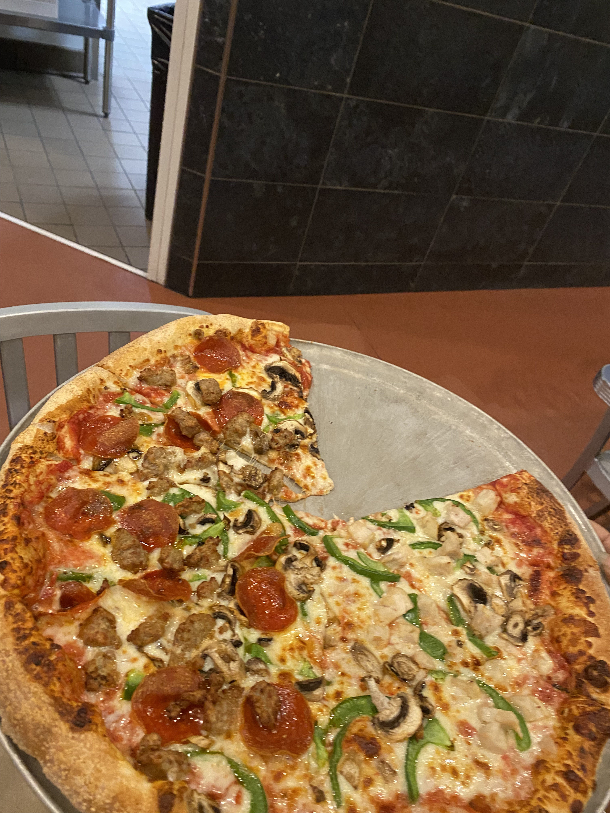
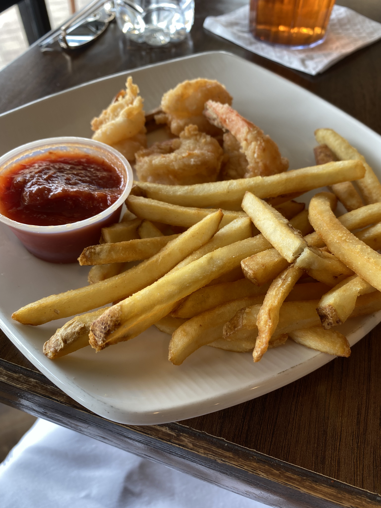
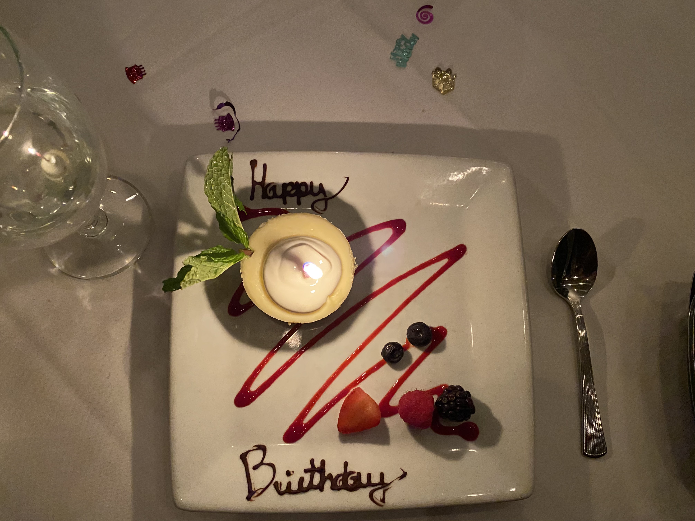
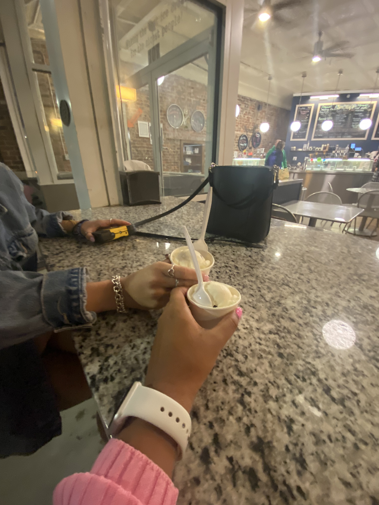

Planet Pizza is one of the best pizzas I have ever tried. It was so good. I shared this pizza with my brother and mother. We all like our separate toppings but decided to get a large pizza to share. On this pizza are pepperoni, Italian sausage, green peppers, mushrooms, and cheese. The crust of this pizza was very tasty, it almost reminded me of Papa John. (Unpopular opinion: No pizza tops Papa John. I would rate this restaurant 9 out of 10, I would recommend it.
 Planet Pizzalocated on 812 Atlantic Ave STE 190, Virginia Beach, VA 23541.
I've eaten at Chix on the Beach twice already. The food is good, my second time I had fried shrimp and fries. I love Shrimp so much, I could eat it every day. Because I am such a fan of shrimp it might be biased of me to say the Shrimp was delicious! I also ate this meal with my brother and mother. My brother ate chicken tenders and fries, and my mother ate a salmon salad. I'd rate this restaurant 7/10, only because I could compare the food of this restaurant to many other decent ones.
 Chix on the Beachlocated on 701 Atlantic Ave, Virginia Beach, VA 23451.
Ruth's Chris Steakhouse might not be unique or original to Virginia Beach, but it is one of the finer diners. This was my second time eating at Ruth's Chris. I got an exquisite meal before being offered a Birthday cheesecake. This was THE BEST CHEESECAKE I had ever tasted in my life! It was so good. It was a vanilla or cream cheese-flavored cheesecake with strawberry puree drizzle, chocolate drizzle "Happy Birthday", and a couple of fresh fruit (strawberry, raspberry, and blueberries). The icing on the cake was the single candle on top of my cheesecake while my family and the waitor sang "Happy Birthday" to me!
 Ruth's Chris Steakhouselocated on 205 Central Park Ave, Virginia Beach, VA 23462.
Around the time of Valentine's day, a couple of friends and I went to Downtown-Burlington, NC to take some cute photos. After our photo sessions, we went to grab some ice cream. Mia and I sat outdoors in this ice cream shop and enjoyed our mint chocolate chip ice cream.
Here's an idea of what a Saturday night might look like in Downtown-Burlington, NC...